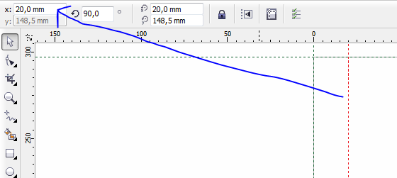
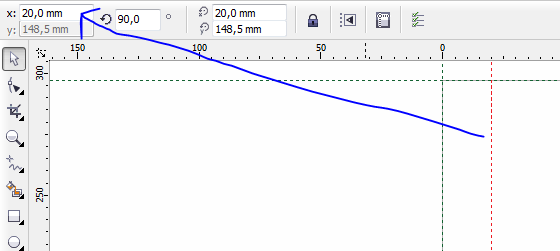

Насчет идеи фиксации направляющих на делениях линейки
Это уже обсуждалось, но теперь и я кратко выскажусь, неужели так трудно пользоваться координатами (x, y). Corel во много раз превосходит Adobe, по настройкам направляющих. (Сугубо мое мнение) 
Sancho, спасибо, подумаю. Des425, как я понимаю, здесь собирают пожелания к следующей версии? Вот, желаю. И не я один. И надо бы пожелания обобщить, сделать статистические выкладки, а потом проанализировать. Только, кто этим займется? А так получается: кто что ни скажет, в ответ - "это есть, только другое и в другом месте". Никто не спорит, что Corel уже давно самодостаточная вещь. Так вот: хорошо бы сделать рабочий стол процентов на 5 темнее листа, чтобы белые объекты на нем не терялись. Sancho, макросы - сила, но, опять-таки, разговор о программе, и поиск (в т.ч., с заменой), надо бы более удобным, сведя множество параметров в один диалог-запрос.
Sancho / 28.03.2010, 00:17
И надо бы пожелания обобщить, сделать статистические выкладки, а потом проанализировать. Только, кто этим займется?
Ага, интересный вопрос. Если ни кто не займётся этим, а я уверен на 99% что это ни кому не надо, то в нужное время я просто выберу на своё усмотрение, составлю список и отправлю его куда нужно.
макросы - сила, но, опять-таки, разговор о программе, и поиск (в т.ч., с заменой), надо бы более удобным
Ну я их об этом точно просить не буду. Зачем мне их просить сделать что то что сделал я? Тем более что я на этом зарабатываю свою какую ни какую копеечку. Просто жало 700р отдать за макрос когда сам корел можно крякнутый скачать в сети, не правда ли? :)
Добрый_ХАМ / 30.03.2010, 18:57
В 11 версии Корела была такая штука, рисешь кривую, затем выделяешь несколько узлов, тянешь их с нажатой правой клавишей, отпускаешь и ... ОНА (кривая) КОПИРУЕТСЯ!!!. Пробовал во всех других версиях, нет, не работает.
Соглашусь, полезная опция. Причём, чтоб можно было как целиком копировать кривую, так и только выделенный сегмент, при нажатой Ctrl, на пример...
lurex / 02.04.2010, 05:06
Любая более-менее сложная таблица из Word в Corel формируется неправильно. Очень сильно помогла бы возможность копировать содержимое сразу несколько ячеек и вставлять их в другое место этой или другой таблицы, как это реализовано в InDesign.
vertus / 03.04.2010, 17:37
Настройки, настройки, настройки... если ребята из Corel начинают выдумывать новые вещи взамен старых, пусть не забывают о тех, кому старые были по душе.
Ну, и покачественнее тестировать продукт перед выпуском. Больше будет армия поклонников. С юзабилити интерфейса у пакета... ну, почти хорошо, а вот с багами как интерфейса, так и экспорта-импорта - очень и очень не. Вплоть до того, что с новыми версиями - новые баги на старом месте, особенно обратил внимание на проблемы с EPS-форматом. Будет возможность, опишу подробности, когда найду файлы, которые не мог открыть в x5.
Добрый_ХАМ / 07.04.2010, 02:26
При добавлении цвета в уже существующий, удерживая Ctrl, программа делает это с шагом 10%. Но алгоритм таков, что эти 10% высчитываются с получаемого предыдущей операцией цвета. Т.е. добавляя таким образом в черный цвет белый, 10% черный мы получим не на 9-ом клике, а на 22-ом. Сложные проценты. Это не всегда удобно, и не всегда нужно. В связи с этим предложение - дать возможность пользователю, выбрать алгоритм пересчета красок, простые или сложные проценты. А можно пойти и дальше, как в свое время с функцией "сдвиг" - удерживая Ctrl - фиксированный шаг в 10% добавляемого цвета, Alt - шаг в 1%, на пример. Удобней стало бы полиграфистам.
Des425 / 07.04.2010, 02:49
Добрый_ХАМ, в Corl есть эффект Gamma, для затемнения и осветления объектов, вот если бы к нему добавили возможность, добавлять комбинацию клавиш, было бы круто!
Это уже обсуждалось, но теперь и я кратко выскажусь, неужели так трудно пользоваться координатами (x, y).
Corel во много раз превосходит Adobe, по настройкам направляющих. (Сугубо мое мнение)

Des425, как я понимаю, здесь собирают пожелания к следующей версии? Вот, желаю. И не я один. И надо бы пожелания обобщить, сделать статистические выкладки, а потом проанализировать. Только, кто этим займется? А так получается: кто что ни скажет, в ответ - "это есть, только другое и в другом месте". Никто не спорит, что Corel уже давно самодостаточная вещь.
Так вот: хорошо бы сделать рабочий стол процентов на 5 темнее листа, чтобы белые объекты на нем не терялись. Sancho, макросы - сила, но, опять-таки, разговор о программе, и поиск (в т.ч., с заменой), надо бы более удобным, сведя множество параметров в один диалог-запрос.
Ну я их об этом точно просить не буду. Зачем мне их просить сделать что то что сделал я? Тем более что я на этом зарабатываю свою какую ни какую копеечку. Просто жало 700р отдать за макрос когда сам корел можно крякнутый скачать в сети, не правда ли? :)Соглашусь, полезная опция. Причём, чтоб можно было как целиком копировать кривую, так и только выделенный сегмент, при нажатой Ctrl, на пример...
Ну, и покачественнее тестировать продукт перед выпуском. Больше будет армия поклонников. С юзабилити интерфейса у пакета... ну, почти хорошо, а вот с багами как интерфейса, так и экспорта-импорта - очень и очень не. Вплоть до того, что с новыми версиями - новые баги на старом месте, особенно обратил внимание на проблемы с EPS-форматом. Будет возможность, опишу подробности, когда найду файлы, которые не мог открыть в x5.
Страницы